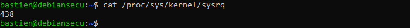
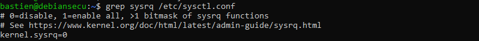

Désactivation des Magic keys¶
Les Magics keys peuvent avoir un impact énorme sur un système Linux (redémarrage, kill de processus, affichage de la mémoire dans la console…), il est donc intéressant de les désactiver.
Classification¶
Niveau ANSSI : intermédiaire
Sécurité physique
Défense en profondeur
Procédures¶
Vérifions si les magic keys sont activées ou non :

Si la valeur retournée est différente de 0, désactivons les :
